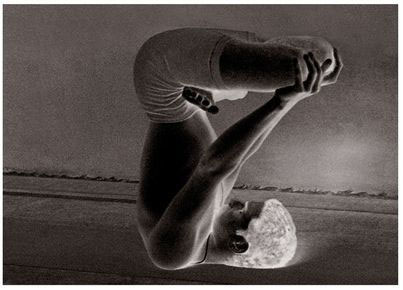
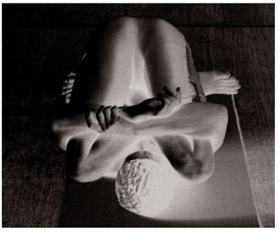
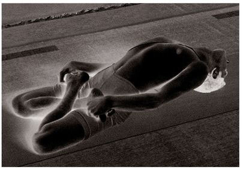

Pindasana has fourteen vinyasas. The 9th is the state of the asana.
METHOD
First, follow the vinyasass of Urdhva Padmasana above through to the 9th vinyasa; this is the 8th vinyasa. Then, doing puraka and then rechaka, bring the legs in Padmasana slowly down to the forehead, envelop the thighs with the arms, embrace the Padmasana, hold the wrists tightly, balance the body on the shoulders only, and slowly do puraka and rechaka as much as possible; this is the 9th vinyasa. Subsequent vinyasas are as those of Sarvangasana (see figure).
MOST PEOPLE WITH SOME KNOWLEDGE OF YOGA KNOW ABOUT SARVANGASANA. They may not know the method for the vinyasas, but it is my belief that they have heard, at least, of Sarvangasana itself. What they may not be aware of, however, is the order in which the asanas associated with it must be performed, or how steady to make the rechaka and puraka, or how much time to devote to their practice. This is because they get their information from books on the practice of yoga written by people who want to spread word of the science of yoga out of a love and respect for it, but without knowing it properly themselves. If we read these books, we notice that the relation between one asana and another, and a description of rechaka and puraka, are nowhere to be found; moreover, in such books, differences regarding the methods of practice abound.
URDHVA PADMASANA

PINDASANA

MATSYASANA

UTTANA PADASANA
It is my view that it is better to put accurate knowledge before aspirants. I have thus tried to write this book in such a way that, if readers follow its methods properly, they will derive some benefit from what it describes. In the modern world, people have many kinds of fears and inaccurate notions about the science of yoga. In order to allay such fears and correct such notions, the path of yoga should first be practiced in accordance with the scriptures, its fruits experienced, and then be passed on to others. As many great people in the world are knowledgeable about the science of yoga, they should foster able disciples, direct them on the proper path, and then send them forth for the benefit of the universe. It is not enough to lecture: “Simply do it; you will profit.” One must be able to demonstrate what one speaks of. This is the prime goal of yoga.
The shastrakaras refer to Sarvangasana and Shirshasana [asana 39] as “viparita karani.”⁷ Just as a country’s king and ministers are important, so too, for the practice of yoganga [yogic limbs], are these two asanas important. Accordingly, having started with the Surya Namaskara and then proceeded through all the other asanas, one should end with these seven asanas, the order of which must never vary: Sarvangasana; Halasana; Karnapidasana; Urdhva Padmasana; Pindasana; Matsyasana; and Uttana Padasana.
Again, these seven asanas must be practiced systematically; after finishing them, one should never go on to do an asana like Paschimattanasana . Only the five asanas just described and those ahead—Matsyasana, Uttana Padasana, and Shirshasana—should be practiced after all the other asanas have been done. Otherwise, it could be harmful to an aspirant. Therefore, one should practice following only the methods specified here. This is the rule, which must never be forgotten.
BENEFITS OF ASANAS 32 TO 36
Some of the five asanas just described strengthen the skeletal muscles, others purify different parts of the body, and still others purify and strengthen the inner nadis, chakras, sira, dhamani [blood vessels and neural network], three doshas, digestive system, and the jathara agni.
Normally, the food we eat mixes with bile and is well digested, with the result that the essence of the digested food becomes blood. The transformation of every thirty-second drop of blood is vitality, and the thirty-second transformation of this vitality is called bindu [nectar; droplet], which is also known to yogis as amrita bindu, or drop of immortality. Amrita bindu pervades all parts and limbs of the body, strengthening, nourishing, and soothing them. As long as amrita bindu remains in the body, life abides in the body. But when amrita bindu attenuates, death is drawn closer. As a scriptural statement states: “Maranam bindu patena jivanam bindu dharanat [The falling of the drop is death, while retaining bindu is life].” Therefore, we have first to preserve amrita bindu. It has to be purified and preserved properly, and this can be achieved by no other method than Sarvangasana and the other asanas outlined above. These five asanas purify all parts of the body, and stimulate bindu to pervade it. Sarvangasana purifies the heart, lungs, and all other parts of the body by making the blood hot. That is probably why it has earned the name Sarvangasana.⁸
By means of these five asanas, the vishuddhi chakra [throat chakra], heart, lungs, limbs, digestive system, and jathara [stomach] are purified, and perversions of the vital wind, which result in hiccups, dry cough, constipation, and indigestion, as well as high blood pressure, are warded off. They also prevent illnesses such as asthma, and ailments related to the heart. Doctors believe that changes in the vata, pitta, or kapha dosas cause disease. If there is a change in the kapha dosa, the defective kapha increases and travels to the lungs, where it congeals and impedes respiration, weakening the body. Such a disease results from contact with contaminated food, vihara dosa [inappropriate recreation], or contact with contagious people.
Illnesses related to the heart and nadis, doctors believe, are yapya, or congenital; they are a deformation of prakriti [nature]. Medical cures for yapya rogas are futile; though the treatments for them may lead a person to feel better for a while, they can never be fully successful. Like a thorn in a leg that is removed by another thorn, these diseases are not curable by medicine. Allopathic doctors are unable to cure them and, after look-ing into the yoga shastras, they have rightly begun to believe that many physical and mental ailments can be remedied by natural therapies, which is the path of yoga.
Sarvangasana cures all diseases, purifies the vishuddhi chakra, and makes the amrita bindu firm. Halasana purifies the intestines, the region of the waist, and the throat channel, and strengthens them. By means of an asana such as Sarvangasana, ailments of the throat or those likely to affect the throat, are destroyed, including the inability to pronounce words clearly, throat pain, and diseases associated with the heart. Sarvangasana also purifies the base of the throat (kanta kupa), prevents choking, and stops the appearance of boils caused by internal heat. In addition, musicians who practice this asana for a period of time will find that it helps their singing become melodious and tuneful.
Karnapidasana eliminates diseases of the ears, such as those that cause pus and blood to flow frequently, or a ringing in the ears. If such things are ignored, men gradually lose their hearing. It is thus better to cure them as early as possible with Karnapidasana.
Urdhva Padmasana purifies the anal and urinary channels, and causes the anterior section of the spinal column to become firm.
Pindasana purifies the lower abdomen, the spinal column, liver and spleen, and the stomach.
The five asanas associated with Sarvangasana involve bending the body forward. The next two, namely Matsyasana and Uttana Padasana, bend the body back.
The five asanas described above must be practiced systematically. After practicing them, an aspirant should not go on to practice other asanas, such as Paschimattanasana. Following these five, Matsyasana, Uttana Padasana, and Shirshasana should be practiced. To do otherwise would be harmful to an aspirant. Therefore, the method specified here should be followed during practice. This is the niyama [rule], which an aspirant should never forget.